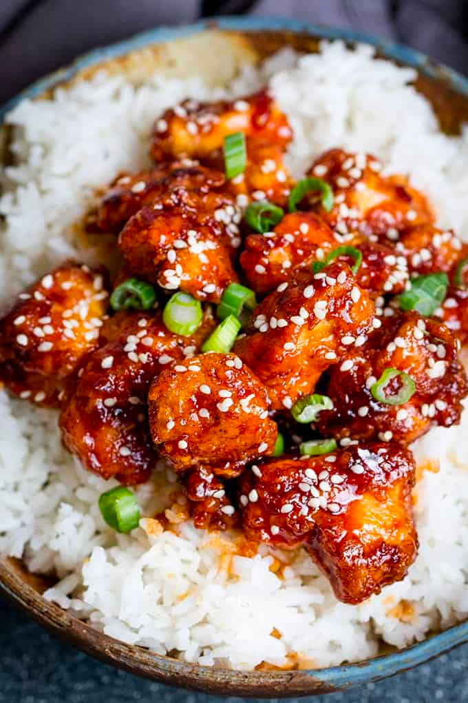

How To Make Crispy Sesame Chicken with a Sticky Asian Sauce
Ingredients:

- 2 eggs - lightly beaten
- 3 tbsp cornflour (cornstarch)
- 10 tbsp plain (all-purpose) flour
- ½ tsp salt
- 3 chicken breast fillets
- 2 tbsp sesame seeds
Equipment:
- Heat the oil in a wok or large frying pan until very hot.
- Whilst the oil is heating, place the egg in one shallow bowl and the cornflour in another shallow bowl. Add the flour, salt, pepper, garlic salt and paprika to another shallow bowl and mix together.
- Dredge the chicken in the cornflour, then dip in the egg (make sure all of the chicken is covered in egg wash), and finally dredge it in the seasoned flour. Add to the wok and cook on a high heat for 6-7 minutes, turning two or three times during cooking, until well browned. You may need to cook in two batches (I find I can do it in one batch so long as it's no more than 3 chicken breasts). Remove from the pan and place in a bowl lined with kitchen towels.
- Add all of the sauce ingredients to the hot wok, stir and bubble on a high heat until the sauce reduces by about a third (should take 2-3 minutes). Add the chicken back in and toss in the sauce to coat. Cook for 1-2 minutes.
- Turn off the heat and divide between four bowls. Serve with boiled rice and top with sesame seeds and spring onions.